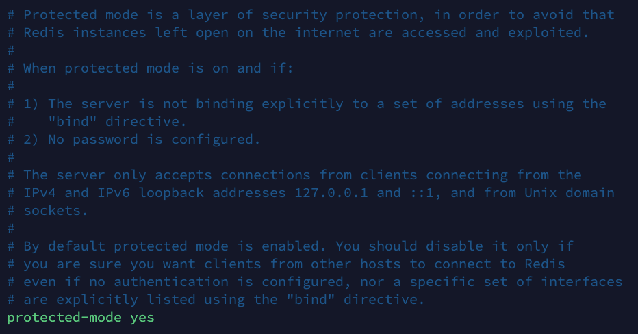
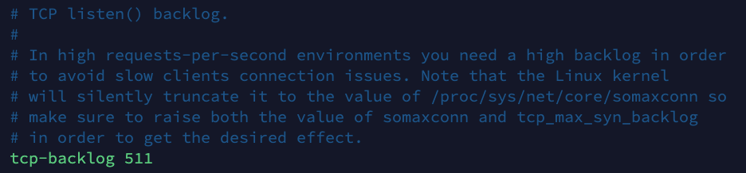
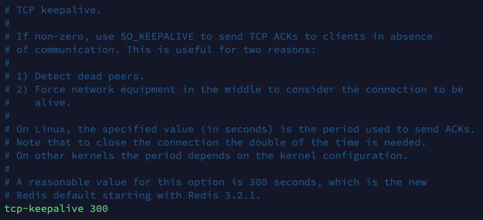
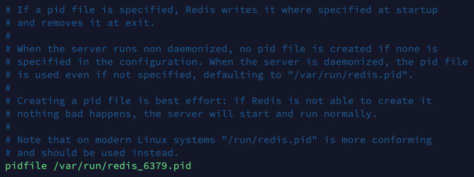
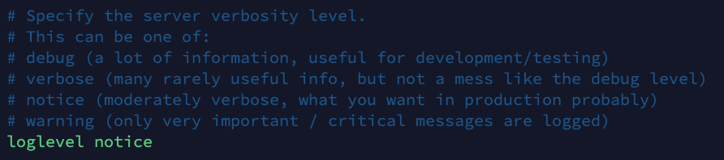
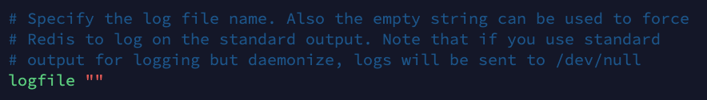
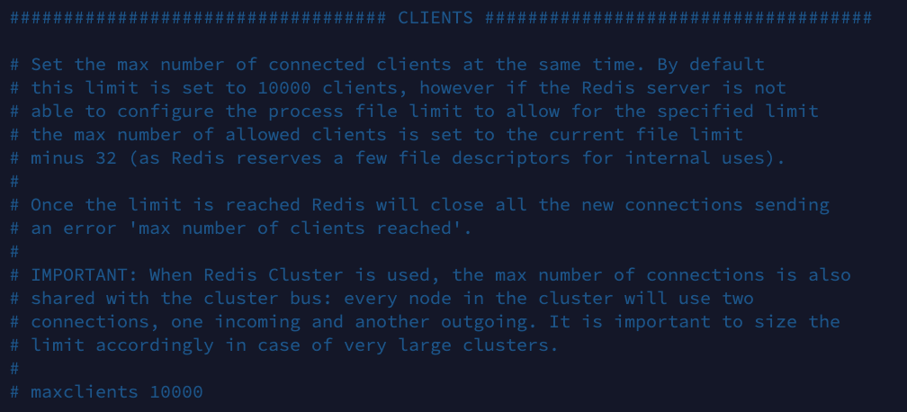
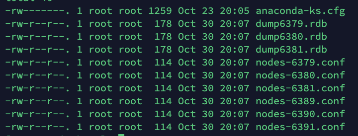

# Redis
# Redis 概述
基于 redis6 的学习
# Redis 介绍
- Redis 是一个开源的 key-value 存储系统。
- 和 Memcached 类似，它支持存储的 value 类型相对更多，包括 string (字符串)、list (链表)、set (集合)、zset (sorted set –有序集合) 和 hash（哈希类型）。
- 这些数据类型都支持 push/pop、add/remove 及取交集并集和差集及更丰富的操作，而且这些操作都是原子性的。
- 在此基础上，Redis 支持各种不同方式的排序。
- 与 memcached 一样，为了保证效率，数据都是缓存在内存中。
- 区别的是 Redis 会周期性的把更新的数据写入磁盘或者把修改操作写入追加的记录文件。
- 并且在此基础上实现了 master-slave (主从) 同步。
# 应用场景
- 配合关系型数据库做高速缓存
- 高频次，热门访问的数据，降低数据库 IO。
- 分布式架构，做 session 共享。
多样的数据结构存储持久化数据

# 相关技术
Redis 使用的是单线程 + 多路 IO 复用技术：
多路复用是指使用一个线程来检查多个文件描述符（Socket）的就绪状态，比如调用 select 和 poll 函数，传入多个文件描述符，如果有一个文件描述符就绪，则返回，否则阻塞直到超时。得到就绪状态后进行真正的操作可以在同一个线程里执行，也可以启动线程执行（比如使用线程池）。
** 串行 vs 多线程 + 锁（memcached） vs 单线程 + 多路 IO 复用 (Redis)**（与 Memcache 三点不同：支持多数据类型，支持持久化，单线程 + 多路 IO 复用）
# Redis（key）键
- keys * 查看当前库所有 key
- exists key 检查某个 key 是否存在
- type key 查看 key 的类型
- del key 删除指定 key 数据
- unlink key 根据 key 选择非阻塞删除（仅将 key 从 keyspace 元数据中删除，真正删除会在后续异步操作）
- expire key 10 设置 key 过期时间
- ttl key 查看还有多少秒过期 -1 代表永不过期 -2 代表已过期
- select 命令切换数据库
- dbsize 查看当前数据库 key 的数量
- flushdb 清空当前库
- flushall 通杀全部库
# 常用五大基本数据类型
# 字符串（String）
String 类型是二进制安全的。意味着 Redis 的 string 可以包含任何数据。比如 jpg 图片或者序列化的对象。
String 类型是 Redis 最基本的数据类型，一个 Redis 中字符串 value 最多可以是 512M。
set <key><value>：添加键值对get <key>：查询对应键值append <key><value>：将给定的 <value> 追加到原值的末尾strlen <key>：获得值的长度setnx <key><value>：只有在 key 不存在时，设置 key 的值incr <key>：将 key 中储存的数字值增 1，只能对数字值操作，如果为空，新增值为 1（具有原子性）decr <key>：将 key 中储存的数字值减 1，只能对数字值操作，如果为空，新增值为 -1incrby/decrby <key><步长>：将 key 中储存的数字值增减。自定义步长mset <key1><value1><key2><value2>：同时设置一个或多个 key-value 对mget <key1><key2><key3>...：同时获取一个或多个 valuemsetnx <key1><value1><key2><value2>...：同时设置一个或多个 key-value 对，当且仅当所有给定 key 都不存在getrange <key><起始位置><结束位置>：获得值的范围setrange <key><起始位置><value>：用 <value> 覆写 <key> 所储存的字符串值setex <key><过期时间><value>：设置键值的同时，设置过期时间，单位秒。getset <key><value>：以新换旧，设置了新值同时获得旧值。
# 原子性
所谓 原子 操作是指不会被线程调度机制打断的操作；
这种操作一旦开始，就一直运行到结束，中间不会有任何 context switch （切换到另一个线程）。
- 在单线程中， 能够在单条指令中完成的操作都可以认为是” 原子操作”，因为中断只能发生于指令之间。
- 在多线程中，不能被其它进程（线程）打断的操作就叫原子操作。
Redis 单命令的原子性主要得益于 Redis 的单线程。
# 数据结构
内部结构实现上类似于 Java 的 ArrayList，采用预分配冗余空间的方式来减少内存的频繁分配.
内部为当前字符串实际分配的空间 capacity 一般高于实际字符串长度 len。当字符串长度小于 1M 时，扩容都是加倍现有的空间，如果超过 1M，扩容是一次只会多扩容 1M 的空间。需要注意的是字符串最大长度为 512M。
# 列表（List）
Redis 列表是简单的字符串列表，按照插入顺序排序。你可以添加一个元素到列表的头部（左边）或者尾部（右边）。
它的底层实际是个双向链表，对两端的操作性能很高，通过索引下标的操作中间的节点性能会较差。
lpush/rpush <key><value1><value2><value3> ....： 从左边 / 右边插入一个或多个值。lpop/rpop <key>：从左边 / 右边吐出一个值。值在键在，值光键亡。rpoplpush <key1><key2>：从 <key1> 列表右边吐出一个值，插到 <key2> 列表左边。lrange <key><start><stop>：按照索引下标获得元素（从左到右）lrange mylist 0 -1 0：左边第一个，-1 右边第一个，（0 -1 表示获取所有）lindex <key><index>：按照索引下标获得元素（从左到右）llen <key>：获得列表长度linsert <key> before/after <value><newvalue>：在 <value> 的前面 / 后面插入 <newvalue> 插入值lrem <key><n><value>：从左边删除 n 个 value（从左到右）ltrim <key><start><end>：按照索引截取下标元素（从左到右）lset<key><index><value>：将列表 key 下标为 index 的值替换成 value
数据结构
List 的数据结构为快速链表 quickList。
首先在列表元素较少的情况下会使用一块连续的内存存储，这个结构是 ziplist，也即是压缩列表。
它将所有的元素紧挨着一起存储，分配的是一块连续的内存。
当数据量比较多的时候才会改成 quicklist。
因为普通的链表需要的附加指针空间太大，会比较浪费空间。比如这个列表里存的只是 int 类型的数据，结构上还需要两个额外的指针 prev 和 next。
Redis 将链表和 ziplist 结合起来组成了 quicklist。也就是将多个 ziplist 使用双向指针串起来使用。这样既满足了快速的插入删除性能，又不会出现太大的空间冗余。

# Set（集合）
Set 对外提供的功能与 List 类似列表的功能，特殊之处在于 Set 是可以 自动排重 的，当需要存储一个列表数据，又不希望出现重复数据时，Set 是一个很好的选择，并且 Set 提供了判断某个成员是否在一个 Set 集合内的重要接口，这个也是 List 所不能提供的。
Redis 的 Set 是 String 类型的无序集合。它底层其实是一个 value 为 null 的 hash 表，所以添加，删除，查找的复杂度都是 O(1)。
一个算法，随着数据的增加，执行时间的长短，如果是 O(1)，数据增加，查找数据的时间不变。
sadd <key><value1><value2> .....：将一个或多个 member 元素加入到集合 key 中，已经存在的 member 元素将被忽略smembers <key>：取出该集合的所有值。sismember <key><value>：判断集合 <key> 是否为含有该 <value> 值，有返回 1，没有返回 0scard<key>：返回该集合的元素个数。srem <key><value1><value2> ....：删除集合中的某个元素spop <key>：随机从该集合中吐出一个值srandmember <key><n>：随机从该集合中取出 n 个值，不会从集合中删除smove <source><destination>value：把集合中一个值从一个集合移动到另一个集合sinter <key1><key2>：返回两个集合的交集元素sunion <key1><key2>：返回两个集合的并集元素sdiff <key1><key2>：返回两个集合的差集元素（key1 中的，不包含 key2 中的）
数据结构
Set 数据结构是字典，字典是用哈希表实现的。
# Hash（哈希）
Redis hash 是一个键值对集合。
Redis hash 是一个 String 类型的 field 和 value 的映射表，hash 特别适合用于存储对象。
hset <key><field><value>：给 <key> 集合中的 <field> 键赋值 <value>hget <key1><field>：从 <key1> 集合 <field> 取出 valuehmset <key1><field1><value1><field2><value2>...： 批量设置 hash 的值hexists <key1><field>：查看哈希表 key 中，给定域 field 是否存在hkeys <key>：列出该 hash 集合的所有 fieldhvals <key>：列出该 hash 集合的所有 valuehincrby <key><field><increment>：为哈希表 key 中的域 field 的值加上增量 1 -1hsetnx <key><field><value>：将哈希表 key 中的域 field 的值设置为 value ，当且仅当域 field 不存在
数据结构
Hash 类型对应的数据结构是两种：ziplist（压缩列表），hashtable（哈希表）。
当 field-value 长度较短且个数较少时，使用 ziplist，否则使用 hashtable。
# Zset（有序集合）
Redis 有序集合 zset 与普通集合 set 非常相似，是一个没有重复元素的字符串集合。
不同之处是有序集合的每个成员都关联了一个评分（score）, 这个评分（score）被用来按照从最低分到最高分的方式排序集合中的成员。集合的成员是唯一的，但是评分可以是重复的。
因为元素是有序的，所以可以很快的根据评分（score）或者次序（position）来获取一个范围的元素。
访问有序集合的中间元素也是非常快的，因此能够使用有序集合作为一个没有重复成员的智能列表。
zadd <key><score1><value1><score2><value2>…：将一个或多个 member 元素及其 score 值加入到有序集 key 当中zrange <key><start><stop> [WITHSCORES]：返回有序集 key 中，下标在 <start><stop> 之间的元素- 当带 WITHSCORES，可以让分数一起和值返回到结果集
zrangebyscore key min max [withscores] [limit offset count]：返回有序集 key 中，所有 score 值介于 min 和 max 之间（包括等于 min 或 max ）的成员。有序集成员按 score 值递增（从小到大）次序排列。zrevrangebyscore key max min [withscores] [limit offset count]：同上，改为从大到小排列zincrby <key><increment><value>：为元素的 score 加上增量zrem <key><value>：删除该集合下，指定值的元素zcount <key><min><max>：统计该集合，分数区间内的元素个数zrank <key><value>：返回该值在集合中的排名，从 0 开始
数据结构
SortedSet（zset）_是 Redis 提供的一个非常特别的数据结构，一方面它等价于 Java 的数据结构 Map<String, Double>，可以给每一个元素 value 赋予一个权重 score，另一方面它又类似于 TreeSet，内部的元素会按照权重 score 进行排序，可以得到每个元素的名次，还可以通过 score 的范围来获取元素的列表。
zset 底层使用了两个数据结构
- hash，hash 的作用就是关联元素 value 和权重 score，保障元素 value 的唯一性，可以通过元素 value 找到相应的 score 值
- 跳跃表，跳跃表的目的在于给元素 value 排序，根据 score 的范围获取元素列表
# 配置文件
# Units
单位，配置大小单位，开头定义了一些基本的度量单位，只支持 bytes，不支持 bit。
大小写不敏感。
# INCLUDES
包含，多实例的情况可以把公用的配置文件提取出来。
# NETWORK
网络相关配置。
bind
默认情况
bind=127.0.0.1只能接受本机的访问请求。不写的情况下，无限制接受任何 ip 地址的访问。
生产环境肯定要写你应用服务器的地址，服务器是需要远程访问的，所以需要将其注释掉。
如果开启了 protected-mode*，那么在没有设定 *bind ip 且没有设密码的情况下，Redis 只允许接受本机的响应。
protected-mode
将本机访问保护模式设置 no。

port
端口号，默认 6379。
tcp-backlog
设置 tcp 的 backlog，backlog 其实是一个连接队列，backlog 队列总和 未完成三次握手队列 已经完成三次握手队列。
在高并发环境下你需要一个高 backlog 值来避免慢客户端连接问题。

timeout
一个空闲的客户端维持多少秒会关闭，0 表示关闭该功能。即永不关闭。
tcp-keepalive
对访问客户端的一种心跳检测，每个 n 秒检测一次。
单位为秒，如果设置为 0，则不会进行 Keepalive 检测，建议设置成 60。

# GENERAL
通用。
daemonize
是否为后台进程，设置为 yes。
守护进程，后台启动。pidfile
存放 pid 文件的位置，每个实例会产生一个不同的 pid 文件。
loglevel
指定日志记录级别，Redis 总共支持四个级别：debug、verbose、notice、warning，默认为 notice。
logfile
日志文件名称。
database
设定库的数量 默认 16，默认数据库为 0，可以使用SELECT <dbid>命令在连接上指定数据库 id。
# SECURITY
安全。
访问密码的查看、设置和取消。
在命令中设置密码，只是临时的。重启 redis 服务器，密码就还原了。
永久设置，需要在配置文件中进行设置。
# LIMITS
限制。
maxclients
设置 redis 同时可以与多少个客户端进行连接。
默认情况下为 10000 个客户端。
如果达到了此限制，redis 则会拒绝新的连接请求，并且向这些连接请求方发出 max number of clients reached 以作回应。

maxmemory
建议必须设置，否则，将内存占满，造成服务器宕机。
设置 redis 可以使用的内存量。一旦到达内存使用上限，redis 将会试图移除内部数据，移除规则可以通过 maxmemory-policy 来指定。
如果 redis 无法根据移除规则来移除内存中的数据，或者设置了不允许移除，那么 redis 则会针对那些需要申请内存的指令返回错误信息，比如 SET、LPUSH 等。
但是对于无内存申请的指令，仍然会正常响应，比如 GET 等。如果你的 redis 是主 redis（ 说明你的 redis 有从 redis ），那么在设置内存使用上限时，需要在系统中留出一些内存空间给同步队列缓存，只有在你设置的是 “不移除” 的情况下，才不用考虑这个因素。
maxmemory-policy
volatile-lru：使用 LRU 算法移除 key，只对设置了过期时间的键（最近最少使用）。
allkeys-lru：在所有集合 key 中，使用 LRU 算法移除 key。
volatile-random：在过期集合中移除随机的 key，只对设置了过期时间的键。
allkeys-random：在所有集合 key 中，移除随机的 key。
volatile-ttl：移除那些 TTL 值最小的 key，即那些最近要过期的 key。
noeviction：不进行移除。针对写操作，只是返回错误信息。
maxmemory-samples
设置样本数量，LRU 算法和最小 TTL 算法都并非是精确的算法，而是估算值，所以你可以设置样本的大小，redis 默认会检查这么多个 key 并选择其中 LRU 的那个。
一般设置 3 到 7 的数字，数值越小样本越不准确，但性能消耗越小。
# Redis 的发布与订阅
Redis 发布订阅（ pub/sub ）是一种消息通信模式：发送者（ pub ）发送消息，订阅者（ sub ）接收消息。
Redis 客户端可以订阅任意数量的频道。
- 客户端可以订阅频道
- 当给这个频道发布消息后，消息就会发送给订阅的客户端
subscribe channel # 订阅频道 | |
publish channel hello # 频道发送信息 |
# Redis6 中新的数据类型
# Bitmaps
现代计算机用二进制（位） 作为信息的基础单位，1 个字节等于 8 位，例如 "abc” 字符串是由 了个字节组成，但实际在计算机存储时将其用二进制表示"abc" 对应的 ASCII 码分别是 97、 98、99，对应的二进制分别是 01100001、 01100010 和 01100011， 如下图
合理使用操作位能够有效地提高内存使用率和开发率。
redis 提供了 Bitmaps 这个数据类型，可以实现对位的操作：
Bitmaps 本身不是一种数据类型，实际上它就是字符串（key-value），但是它可以对字符串的位进行操作。
Bitmaps 单独提供一套命令，所以在 redis 中使用 Bitmaps 和使用字符串的方法不太相同。可以把 Bitmaps 想象成一个以位为单位的数组，数组的每个单元只能存储 0 和 1，数组的下标在 Bitmaps 中叫做偏移量。
# 操作命令
setbit
setbit <key><offset><value > 设置 Bitmaps 中某个偏移量的值（0 或者 1）。
offset：偏移量从 0 开始
实例操作
每个独立用户是否访问过网站存放在 Bitmaps 中，将访问的用户记做 1，没有
访问的用户记做 0，用偏移量作为用户的 id。
设置键的第 offset 个位的值（从 0 算起），假设现在有 20 个用户，userid=1
6，11，15，19 的用户对网站进行了访问，那么当前 Bitmaps 初始化结果如图。unique:users:20201106 代表 2020-11-06 这天的独立访问用户的 Bitmaps。
注意点：
很多应用的用户 id 以一个指定数字（例如 10000）开头，直接将用户 id 和
Bitmaps 的偏移量对应势必会造成一定的浪费，通常的做法是每次做 setbit 操作时将用户 id 减去这个指定数字。
在第一次初始化 Bitmaps 时，假如偏移量非常大，那么整个初始化过程执行会
比较慢，可能会造成 Redis 的阻塞。getbit
getbit<key><offset > 获取 Bitmaps 中某个偏移量的值。
bitcount
统计字符串被设置为 1 的 bit 数。一般情况下 ，给定的整个字符串都会被进行计数，通过指定额外的 start 或 end 参数，可以让计数只在特定的位上进行。start 和 end 参数的设置，都可以使用负数值：比如 -1 表示最后一个位，而 - 2 表示倒数第二个位，start、end 是指 bit 组的字节的下标数，二者皆包含。
格式
bitcount<key>[start end] 统计字符串从 start 字节到 end 字节 bit 值为 1 的数量
bitop
bitop 是一个复合操作，它可以做多个 bitmaps 的 and 交集、or 并集、not 非、xor 异或操作并将结果保存在 destkey 中。
格式
bitop add(/or/not/xor) <destkey> [key......]
Bitmaps 与 set 对比
假设网站有 1 亿用户， 每天独立访问的用户有 5 千万， 如果每天用集合类型和 Bitmaps 分别存储活跃用户可以得到表：
**set 和 Bitmaps 存储一天活跃用户对比 **
| 数据类型 | 每个用户 id 占用空间 | 需要存储的用户量 | 全部内存量 |
|---|---|---|---|
| 集合 | 64 位 | 50000000 | 64 位 * 50000000 = 400MB |
| Bitmaps | 1 位 | 100000000 | 1 位 * 100000000 = 12.5MB |
很明显， 这种情况下使用 Bitmaps 能节省很多的内存空间， 尤其是随着时间推移节省的内存还是非常可观的。
**set 和 Bitmaps 存储独立用户空间对比 **
| 数据类型 | 一天 | 一个月 | 一年 |
|---|---|---|---|
| 集合 | 400MB | 12GB | 144GB |
| Bitmaps | 12.5MB | 375MB | 4.5GB |
但 Bitmaps 并不是万金油， 假如该网站每天的独立访问用户很少， 例如只有 10 万（大量的僵尸用户） ， 那么两者的对比如下表所示， 很显然， 这时候使 Bitmaps 就不太合适了， 因为基本上大部分位都是 0。
**set 和 Bitmaps 存储一天活跃用户对比（用户比较少） **
| 数据类型 | 每个用户 id 占用空间 | 需要存储的用户量 | 全部内存量 |
|---|---|---|---|
| 集合 | 64 位 | 100000 | 64 位 * 100000 = 800KB |
| Bitmaps | 1 位 | 100000000 | 1 位 * 100000000 = 12.5MB |
# HyperLogLog
在工作当中，我们经常会遇到与统计相关的功能需求，比如统计网站 PV（PageView 页面访问量），可以使用 Redis 的 incr、incrby 轻松实现。但像 UV ( UniqueVisitor，独立访客）、独立 IP 数、搜索记录数等需要去重和计数的问题如何解决？这种求集合中不重复元素个数的问题称为基数问题。
解決基数问题有很多种方案！！
(1）数据存储在 MysQL 表中，使用 distinct count 计算不重复个数。
（2）使用 Redis 提供的 hash、 set、bitmaps 等数据结构来处理。
以上的方案结果精确，但随着数据不断增加，导致占用空间越来越大，对于非
常大的数据集是不切实际的。
能否能够降低 定的精度来平衡存储空间？Redis 推出了 HyperLogLog
Redis HyperLogLog 是用来做基数统计的算法，HyperLogLog 的优点是，在输入元素的数量或者体积非常非常大时，计算基数所需要的空间总是固定的，并且是很小的。
在 Redis 里面，每个 HyperLogLog 键只需要花费 12KB 内存，就可以计算接
近 2^64 个不同元素的基数。这和计算基数时，元素越多耗费内存就越多的集合形成鲜明对比。但是，因为 HyperLogLog 只会根据输入元素来计算基数 ，而不会储存输入元素本身，所以 HyperLogLog 不能像集合那样 ，返回输入的各个元素
命令
pfadd
pfadd <key><element> [element....] 添加指定元素到 HyperLogLog 中
pfcount
pfcount<key>[key...] 计算 HLL 的近视基数，可以计算出多个 HLL。
pfmerge
pfmerge<destkey><sourcekey>[sourcekey....] 将一个或者多个 HLL 合并后的结果保存在另一个 HLL 中。
Geospatial
Redis 3.2 中增加了对 GEO 类型的支持。GEO,Geographic，地理信息的缩写、
该类型，就是元素的 2 维坐标 ，在地图上就是经纬度。redis 基于该类型，提供了经纬度设置，查询，范围查询 ，距离查询，经纬度 Hash 等常见操作。
命令
geoadd
geoadd <key><longitude><latitude><member>[<longitude><latitude><member>....] 添加地理位置（经度，纬度，名称）
geopos
geopos <key><member>[member.....] 获得指定地区的坐标值
geodist
geodist <key><member1><member2> [m|km|ft|mi] 获取两个位置之间的直线距离
# Springboot 整合 Redis6
- 依赖
<!-- redis --><dependency><groupId>org.springframework.boot</groupId>
<artifactId>spring-boot-starter-data-redis</artifactId>
</dependency><!-- spring2.X 集成 redis 所需 common-pool2--><dependency><groupId>org.apache.commons</groupId>
<artifactId>commons-pool2</artifactId>
<version>2.6.0</version>
</dependency> - 配置文件配置 Redis
#Redis服务器地址 spring.redis.host= ip #Redis服务器连接端口 spring.redis.port=6379 #Redis数据库索引（默认为0） spring.redis.database= 0 #连接超时时间（毫秒） spring.redis.timeout=1800000 #连接池最大连接数（使用负值表示没有限制） spring.redis.lettuce.pool.max-active=20 #最大阻塞等待时间(负数表示没限制) spring.redis.lettuce.pool.max-wait=-1 #连接池中的最大空闲连接 spring.redis.lettuce.pool.max-idle=5 #连接池中的最小空闲连接 spring.redis.lettuce.pool.min-idle=0 - Redis 配置类（需要继承 CachingConfigurerSupport）
@EnableCaching@Configurationpublic class RedisConfig extends CachingConfigurerSupport {
@Beanpublic RedisTemplate<String, Object> redisTemplate(RedisConnectionFactory factory) {
RedisTemplate<String, Object> template = new RedisTemplate<>();
RedisSerializer<String> redisSerializer = new StringRedisSerializer();
Jackson2JsonRedisSerializer jackson2JsonRedisSerializer = new Jackson2JsonRedisSerializer(Object.class);
ObjectMapper om = new ObjectMapper();
om.setVisibility(PropertyAccessor.ALL, JsonAutoDetect.Visibility.ANY);
om.enableDefaultTyping(ObjectMapper.DefaultTyping.NON_FINAL);
jackson2JsonRedisSerializer.setObjectMapper(om);
template.setConnectionFactory(factory);
//key 序列化方式template.setKeySerializer(redisSerializer);
//value 序列化template.setValueSerializer(jackson2JsonRedisSerializer);
//value hashmap 序列化template.setHashValueSerializer(jackson2JsonRedisSerializer);
return template;
}@Beanpublic CacheManager cacheManager(RedisConnectionFactory factory) {
RedisSerializer<String> redisSerializer = new StringRedisSerializer();
Jackson2JsonRedisSerializer jackson2JsonRedisSerializer = new Jackson2JsonRedisSerializer(Object.class);
// 解决查询缓存转换异常的问题ObjectMapper om = new ObjectMapper();
om.setVisibility(PropertyAccessor.ALL, JsonAutoDetect.Visibility.ANY);
om.enableDefaultTyping(ObjectMapper.DefaultTyping.NON_FINAL);
jackson2JsonRedisSerializer.setObjectMapper(om);
// 配置序列化（解决乱码的问题）, 过期时间 600 秒RedisCacheConfiguration config =
RedisCacheConfiguration.defaultCacheConfig()
.entryTtl(Duration.ofSeconds(600))
.serializeValuesWith(RedisSerializationContext.SerializationPair.fromSerializer(jackson2JsonRedisSerializer))
.disableCachingNullValues();
RedisCacheManager cacheManager = RedisCacheManager.builder(factory)
.cacheDefaults(config)
.build();
return cacheManager;
}}
# Redis 事务和锁机制
Redis 事务是一个单独的隔离操作：事务中的所有命令都会序列化、按顺序地执行。事务在执行的过程中，不会被其他客户端发送来的命令请求所打断。
Redis 事务的主要作用就是串联多个命令防止别的命令插队。
Redis 事务是一组隔离操作，会顺序执行，在执行过程中，不会被其他客户端发送的命令请求给打断，Multi 开启事务，向队列中输入要执行的指令，Exec 按照执行队列中的指令。Discard 放弃组队。
# 事务操作
Multi**、Exec、**Discard
multi 指令
开启事务，向队列输入执行指令。
exec 指令
按顺序执行队列中的指令
在组队中指令出现错误，exec 时都不会成功，组队指令没有出错，在 exec 执行时出错，只有出错的指令不成功，其他的命令会成功。
# 悲观锁
悲观锁（Pessimistic Lock），即每次去拿数据的时候都认为有其他线程会修改，所以每次在拿数据的时候都会上锁，这样其他线程想要拿到这个数据就会被 block 直到成功拿到锁。（效率低）
# 乐观锁
乐观锁（Optimistic Lock），即每次去拿数据的时候都认为其他线程不会修改，所以不会上锁，但是在更新的时候会判断一下在此期间有没有其他线程去更新这个数据，可以使用版本号等机制。
乐观锁适用于多读的应用类型，这样可以提高吞吐量。
Redis 就是利用这种 check-and-set 机制实现事务的。
# Watch、UnWatch
在执行 multi 之前，先执行 watch key1 [key2]，可以监视一个（或多个 ） key。如果在事务执行之前这个 key 被其他命令所改动，那么事务将被打断。
取消 WATCH 命令对所有 key 的监视。如果在执行 WATCH 命令之后，EXEC 命令或 DISCARD 命令先被执行，那么就不需要再执行 UNWATCH 。
# 事务三特性
单独的隔离操作
事务中的所有命令都会序列化、按顺序地执行。事务在执行的过程中，不会被其他客户端发送来的命令请求所打断。
没有隔离级别的概念
队列中的命令没有提交之前都不会实际被执行，因为事务提交前任何指令都不会被实际执行。
不保证原子性
事务中如果有一条命令执行失败，其后的命令仍然会被执行，没有回滚 。
# Redis 持久化
# RDB
在指定的时间间隔内将内存中的数据集快照写入磁盘， 即 Snapshot 快照，恢复时是将快照文件直接读到内存里。
# 备份是如何执行的
Redis 会单独创建（fork）一个子进程来进行持久化，会先将数据写入到一个临时文件中，待持久化过程都结束了，再用这个临时文件替换上次持久化好的文件。整个过程中，主进程是不进行任何 IO 操作的，这就确保了极高的性能，如果需要进行大规模数据的恢复，且对于数据恢复的完整性不是非常敏感，那 RDB 方式是要比 AOF 方式更加的高效。RDB 的缺点是最后一次持久化后的数据可能丢失。
# Fork
- 作用是复制一个与当前进程一样的进程。新进程的所有数据（变量、环境变量、程序计数器等） 数值都和原进程一致，但是是一个全新的进程，并作为原进程的子进程
- 在 Linux 程序中，fork() 会产生一个和父进程完全相同的子进程，但子进程在此后多会 exec 系统调用，出于效率考虑，Linux 中引入了 写时复制技术
- 一般情况父进程和子进程会共用同一段物理内存，只有进程空间的各段的内容要发生变化时，才会将父进程的内容复制一份给子进程
# RDB 持久化流程
# 配置
dump** 文件名字 **
在 redis.conf 中配置文件名称，默认为 dump.rdb。
dump** 保存位置 **
rdb 文件的保存路径可以修改。默认为 Redis 启动时命令行所在的目录下。
stop-writes-on-bgsave-error
即当 redis 无法写入磁盘，关闭 redis 的写入操作。
rdbcompression
持久化的文件是否进行压缩存储。
rdbchecksum
完整性的检查，即数据是否完整性、准确性。
save
表示写操作的次数。
# 优点
- 适合大规模的数据恢复；
- 对数据完整性和一致性要求不高更适合使用；
- 节省磁盘空间；
- 恢复速度快。
# 缺点
- Fork 的时候，内存中的数据被克隆了一份，大致 2 倍的膨胀性需要考虑；
- 虽然 Redis 在 fork 时使用了写时拷贝技术，但是如果数据庞大时还是比较消耗性能；
- 在备份周期在一定间隔时间做一次备份，所以如果 Redis 意外 down 掉的话，就会丢失最后一次快照后的所有修改。
# AOF
以日志的形式来记录每个写操作（增量保存），将 Redis 执行过的所有写指令记录下来（读操作不记录）， 只许追加文件但不可以改写文件，Redis 启动之初会读取该文件重新构建数据，换言之，如果 Redis 重启就会根据日志文件的内容将写指令从前到后执行一次以完成数据的恢复工作。
执行流程
- 客户端的请求写命令会被 append 追加到 AOF 缓冲区内；
- AOF 缓冲区根据 AOF 持久化策略
[always,everysec,no]将操作 sync 同步到磁盘的 AOF 文件中； - AOF 文件大小超过重写策略或手动重写时，会对 AOF 文件 Rewrite 重写，压缩 AOF 文件容量；
- Redis 服务重启时，会重新 load 加载 AOF 文件中的写操作达到数据恢复的目的。
AOF 和 RDB 同时开启时，系统默认读取 AOF 的数据（数据不会存在丢失）
# 配置
AOF** 默认不开启 **
文件名字
AOF** 同步频率设置 **
appendfsync always
始终同步，每次 Redis 的写入都会立刻记入日志；
性能较差但数据完整性比较好。
appendfsync everysec
每秒同步，每秒记入日志一次，如果宕机，本秒的数据可能丢失。
appendfsync no
Redis 不主动进行同步，把同步时机交给操作系统。
Rewrite** 压缩 **
当 AOF 文件的大小超过所设定的阈值时，Redis 就会启动 AOF 文件的内容压缩，只保留可以恢复数据的最小指令集。可以使用命令 bgrewriteaof。
# 优点
- 备份机制更稳健，丢失数据概率更低；
- 可读的日志文本，通过操作 AOF 稳健，可以处理误操作。
# 缺点
- 比起 RDB 占用更多的磁盘空间；
- 恢复备份速度要慢；
- 每次读写都同步的话，有一定的性能压力；
- 存在个别 Bug，造成不能恢复。
# 选择
官方推荐两个都启用。
如果对数据不敏感，可以选单独用 RDB。
不建议单独用 AOF，因为可能会出现 Bug。
如果只是做纯内存缓存，可以都不用。
# 主从复制
主机数据更新后根据配置和策略， 自动同步到备机的 master/slaver 机制，Master 以写为主，Slaver 以读为主。
- 读写分离，性能扩展
- 容灾快速恢复
- 一主多从！
# 主重复制 - 搭建一主多从
创建一个 myredis 文件夹模仿多台机器
mkdir myredis复制 redis 配置文件到 myredis 文件夹中
cp /usr/local/etc/redis.conf /myredis/redis.conf配置一主两从，创建三个配置文件
redis6379.conf
include /myredis/redis.conf
pidfile /var/run/redis_6379.pid
port 6379dbfilename dump6379.rdb
redis6380.conf
include /myredis/redis.conf
pidfile /var/run/redis_6380.pid
port 6380dbfilename dump6380.rdb
redis6381.conf
include /myredis/redis.conf
pidfile /var/run/redis_6381.pid
port 6381dbfilename dump6381.rdb
启动服务
查看主机运行情况，使用客户端连接 redis 服务，使用如下命令查看。
info replication
配从不配主 (redis-cli 命令行操作)
slaveof <ip><port>
# 成为某个实例的从服务器再次查看主机运行情况
# Replicationrole:master
connected_slaves:2
slave0:ip=127.0.0.1,port=6380,state=online,offset=42,lag=1
slave1:ip=127.0.0.1,port=6381,state=online,offset=42,lag=0
master_failover_state:no-failover
master_replid:1b14fa5778316372346af6021bcd0bb131ed27af
master_replid2:0000000000000000000000000000000000000000
master_repl_offset:42
second_repl_offset:-1
repl_backlog_active:1
repl_backlog_size:1048576
repl_backlog_first_byte_offset:1
repl_backlog_histlen:42
127.0.0.1:6379>
主机挂掉，重启就行
从机重启需要重设：
slaveof可以将配置增加到文件中，永久生效
# 一主二仆
主机 6379，从机 6380 和 6381。
- 假设主机 6379 挂掉。
当6379重启后，依然是主服务器。- 假设从机 6380 挂掉。
# 复制原理
- slave 启动成功连接到 master 后会发送一个 sync 命令（同步命令）。
- master 接到命令启动后台的存盘进程，对数据进行持久化操作，同时收集所有接收到的用于修改数据集命令，在后台进程执行完毕之后，master 将传送整个数据文件（rdb）到 slave，以完成一次完全同步。
- 当主服务进行写操作后，和从服务器进行数据同步。
- 全量复制：而 slave 服务在接收到数据库文件数据后，将其存盘并加载到内存中。
- 增量复制：master 继续将新的所有收集到的修改命令依次传给 slave，完成同步。
- 只要是重新连接 master，一次完全同步（全量复制）将被自动执行。
# 薪火相传
上一个 slave 可以是下一个 slave 的 master，slave 同样可以接收其他 _slave_的连接和同步请求，那么该 slave 作为了链条中下一个的 master，可以有效减轻 master 的写压力，去中心化降低风险。
slaveof <ip><port> |
中途变更转向：会清除之前的数据，重新建立拷贝最新的。
当某个 slave 宕机，后面的 slave 都没法备份。
即当主机挂掉，从机还是从机，但是无法继续写数据。
# 反客为主
当一个 master 宕机后，后面的 slave 可以立刻升为 master，其后面的 slave 不用做任何修改。
slaveof no one |
# 哨兵模式
反客为主的自动版，即能够后台监控主机是否故障，如果故障了根据投票数自动将从库转换为主库。
- 创建 sentinel.conf 文件
/opt/etc/sentinel.conf
- 配置哨兵
sentinel monitor mymaster 172.16.88.168 6379 1
# mymaster：监控对象起的服务器名称# 1：至少有多少个哨兵同意迁移的数量。 - 启动哨兵
redis-sentinel /opt/etc/sentinel.conf
主机挂掉，会从机选举中产生新的主机。选举的规则。
# 选举规则
根据优先级别，slave-priority/replica-priority，优先选择优先级靠前的。
根据偏移量，优先选择偏移量大的。
根据 runid，优先选择最小的服务。
# Redis 集群
容量不够，redis 如何进行扩容？
并发写操作， redis 如何分摊？
主从模式，薪火相传模式，主机宕机，导致 ip 地址发生变化，应用程序中配置需要修改对应的主机地址、端口等信息。
解决方法：
代理主机（ 之前 ）
无中心化集群配置（ redis3.0 ）
Redis 集群实现了对 Redis 的水平扩容，即启动 N 个 Redis 节点，将整个数据库分布存储在这 N 个节点中，每个节点存储总数据的 1/N 。
Redis 集群通过分区（partition）来提供一定程度的可用性（availability），即使集群中有一部分节点失效或者无法进行通讯， 集群也可以继续处理命令请求。
# 搭建 Redis 集群
创建配置文件
# 以 redis6379.conf 为例include /opt/etc/redis.conf
pidfile /var/run/redis_6379.pid # 更改port 6379 # 更改
dbfilename dump6379.rdb # 更改cluster-enabled yes # 打开集群模式
cluster-config-file nodes-6379.conf # 设置节点配置文件名称，需要更改cluster-node-timeout 15000 # 设置节点失联事件，超过该时间（ms），集群自动进行主从切换
启动
将 6 个节点合成一个集群
组合之前请确保所有 redis 实例启动后，nodes-xxxx.conf 文件都生成正常。

# 进入 redis 安装目录/opt/redis-6.2.6/src
# 执行redis-cli --cluster create --cluster-replicas 1 172.16.88.168:6379 172.16.88.168:6380 172.16.88.168:6381 172.16.88.168:6389 172.16.88.168:6390 172.16.88.168:6391
采用集群策略连接
redis-cli -c -p PORT
cluster nodes # 命令查看集群信息
# 问题
redis cluster** 如何分配这六个节点？**
一个集群至少要有三个主节点。
选项
--cluster-replicas 1，表示希望为集群中的每个主节点创建一个从节点。分配原则尽量保证每个主数据库运行在不同的 IP 地址，每个从库和主库不在一个 IP 地址上。

什么是 slots？
一个 Redis 集群包含 16384 个插槽（hash slot）， 数据库中的每个键都属于这 16384 个插槽的其中一个。
集群使用公式 CRC16(key) % 16384 来计算键 key 属于哪个槽， 其中 CRC16(key) 语句用于计算键 key 的 CRC16 校验和 。
集群中的每个节点负责处理一部分插槽。 例如， 如果一个集群可以有主节点， 其中：
- 节点 A 负责处理 0 号至 5460 号插槽。
- 节点 B 负责处理 5461 号至 10922 号插槽。
- 节点 C 负责处理 10923 号至 16383 号插槽。
如何在集群中录入值？
在 redis-cli 每次录入、查询键值，redis 都会计算出该 key 应该送往的插槽，如果不是该客户端对应服务器的插槽，redis 会报错，并告知应前往的 redis 实例地址和端口。
redis-cli 客户端提供了 –c 参数实现自动重定向。
例如 redis-cli -c –p 6379 登入后，再录入、查询键值对可以自动重定向。
如何查询集群中的值
每个主机只能查询自己范围内部的插槽。
cluster keyslot <key>：查询某个 key 的 **slot **。
cluster countkeysinslot <slot>：查询某个 slot 是否有值。
CLUSTER GETKEYSINSLOT <slot><count>：返回 count 个 slot 槽中的键。
故障恢复
如果主节点下线？从节点能否自动升为主节点？注意：15 秒超时。
- 当 6379 挂掉后，6389 成为新的主机。
主节点恢复后，主从关系会如何？主节点回来变成从机。
- 当 6379 重启后，6379 成为 6389 的从机。
如果所有某一段插槽的主从节点都宕掉，redis 服务是否还能继续？
- 如果某一段插槽的主从都挂掉，而 cluster-require-full-coverage=yes，那么 ，整个集群都挂掉。
- 如果某一段插槽的主从都挂掉，而 cluster-require-full-coverage=no，那么，该插槽数据全都不能使用，也无法存储。
redis.conf中的参数cluster-require-full-coverage
# 优点
- 实现扩容；
- 分摊压力；
- 无中心配置相对简单。
# 缺点
- 多键操作是不被支持的；
- 多键的 Redis 事务是不被支持的。lua 脚本不被支持；
- 由于集群方案出现较晚，很多公司已经采用了其他的集群方案，而代理或者客户端分片的方案想要迁移至_redis cluster_，需要整体迁移而不是逐步过渡，复杂度较大。
# 应用问题解决
# 缓存穿透
现象
key 对应的数据在数据源并不存在，每次针对此 key 的请求从缓存获取不到，请求都会压到数据源，从而可能压垮数据源。
比如用一个不存在的用户 id 获取用户信息，不论缓存还是数据库都没有，若黑客利用此漏洞进行攻击可能压垮数据库。
造成：
- 应用服务器压力变大。
- redis 命中率下降 查询数据库 。
如何解决
对空值缓存
如果一个查询返回的数据为空（不管是数据是否不存在），仍然把这个空结果（null）进行缓存，设置空结果的过期时间会很短，最长不超过五分钟。
设置可访问的名单（白名单）：
使用 bitmaps 类型定义一个可以访问的名单，名单 id 作为 bitmaps 的偏移量，每次访问和 bitmap 里面的 id 进行比较，如果访问 id 不在 bitmaps 里面，进行拦截，则不允许访问。
采用布隆过滤器
布隆过滤器（Bloom Filter）是 1970 年由布隆提出的。它实际上是一个很长的二进制向量（位图）和一系列随机映射函数（哈希函数）。
布隆过滤器可以用于检索一个元素是否在一个集合中。它的优点是空间效率和查询时间都远远超过一般的算法，缺点是有一定的误识别率和删除困难。
将所有可能存在的数据哈希到一个足够大的 bitmaps 中，一个一定不存在的数据会被这个 bitmaps 拦截掉，从而避免了对底层存储系统的查询压力。
进行实时监控
当发现 Redis 的命中率开始急速降低，需要排查访问对象和访问的数据，和运维人员配合，可以设置黑名单限制服务。
# 缓存击穿
key 对应的数据存在，但在 redis 中过期，此时若有大量并发请求过来，这些请求发现缓存过期一般都会从后端_DB_ 加载数据并回设到缓存，这个时候大并发的请求可能会瞬间把后端 DB 压垮。
- 数据库访问压力瞬间增大。
- redis 中没有出现大量 key 过期，redis 正常运行。
- （即某个经常访问的 key 过期，突然有大量访问这个数据）
# 如何解决
预先设置热门数据
在 redis 高峰访问之前，把一些热门数据提前存入到 redis 里面，加大这些热门数据 key 的时长。
实时调整
现场监控哪些数据热门，实时调整 key 的过期时长。
使用锁
# 缓存雪崩
key 对应的数据存在，但在 redis 中过期，此时若有大量并发请求过来，这些请求发现缓存过期一般都会从后端_DB_ 加载数据并回设到缓存，这个时候大并发的请求可能会瞬间把后端 DB 压垮。
缓存雪崩与缓存击穿的区别在于这里针对很多 key 缓存，前者则是某一个 key。
- 数据库压力变大。
- 即极少的时间段，查询大量 key 的集中过期情况。
# 如何解决
构建多级缓存架构
nginx 缓存 + redis 缓存 + 其他缓存（_ehcache_等）
使用锁或队列：
用加锁或者队列的方式保证来保证不会有大量的线程对数据库一次性进行读写，从而避免失效时大量的并发请求落到底层存储系统上。不适用高并发情况。
设置过期标志更新缓存：
记录缓存数据是否过期（设置提前量），如果过期会触发通知另外的线程在后台去更新实际 key 的缓存。
将缓存失效时间分散开：
比如我们可以在原有的失效时间基础上增加一个随机值，比如 1～5 分钟随机，这样每一个缓存的过期时间的重复率就会降低，就很难引发集体失效的事件。
# 分布式锁
解决分布式时加锁问题。
解决方案：
- 基于 zookeeper，可靠性最高
- 基于 redis，性能最高
使用 redis 解决方案
redis：命令
setnx key value 命令
只有键不存在时，才能对键进行设置操作。
使用 setnx 上锁，通过 del key 使用锁
锁一直没有释放，设置 key 过期时间，自动释放
防止在上锁完后出现异常无法设置过期时间，可以同时设置。
使用命令 set key value nx ex 过期时间
** UUID 防止误删 **
在使用 redis 分布式锁时，可能存在一个机器 a 操作时，获取锁了，操作还没结束。锁过期了，自动释放了，b 机器就会拿到这个锁进行操作。这时候，a 机器操作完了手动释放锁了。b 机器的锁就会释放，这样的问题。
解决：
- 使用不同的 uuid 表示不同的操作，防止误删锁。
set lock uuid nx ex 10
- 释放锁的时候，先检查当前 uuid 和要释放的 uuid 是否一样。
为了确保分布式锁可用，我们至少要确保锁的实现同时满足以下四个条件：
- 互斥性。在任意时刻，只能有一个客户端持有锁
- 不能发生死锁。即使有一个客户端在持有锁的期间崩溃而没有自动解锁，也能保证后续其他客户端能加锁。
- 解铃还需系铃人。加锁和解锁必须是同一个客户端，客户端自己不能把别人加的锁给解了。
- 加锁和解锁必须具有原子性。可以使用 LUA 脚本实现。LUA 脚本类似 redis 事务，有一定的原子性，不会被其他命令插队，可以完后一些 redis 事务性操作。